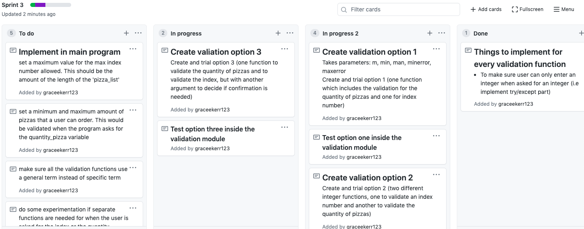
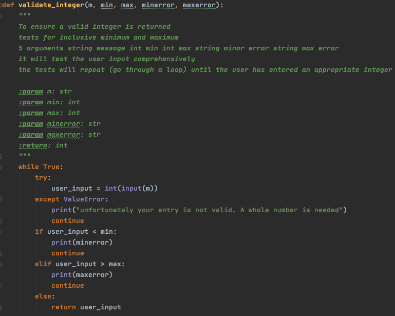
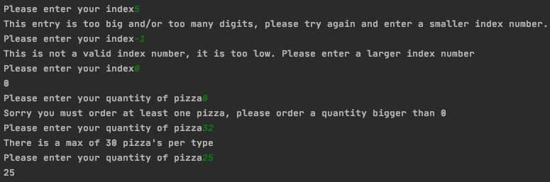
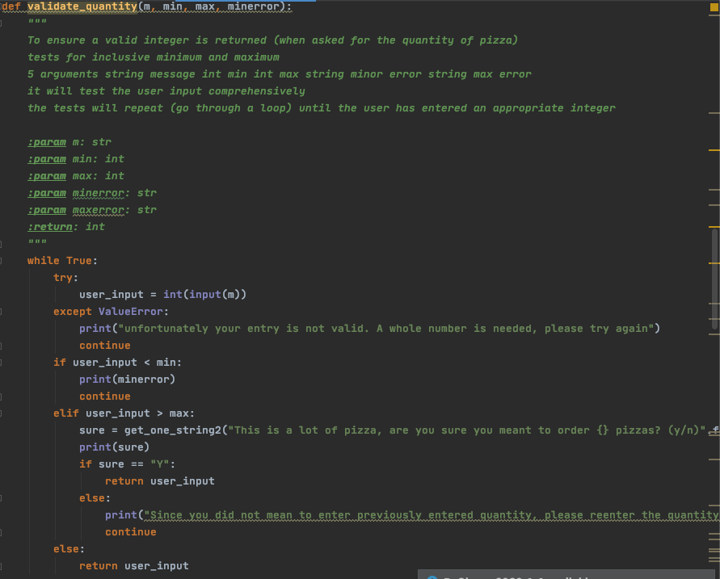
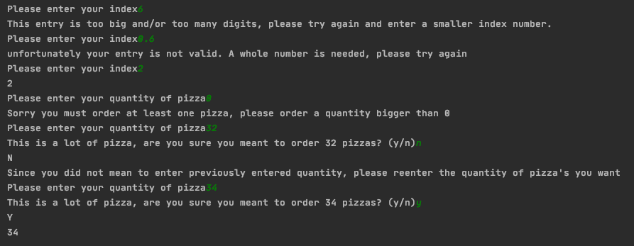
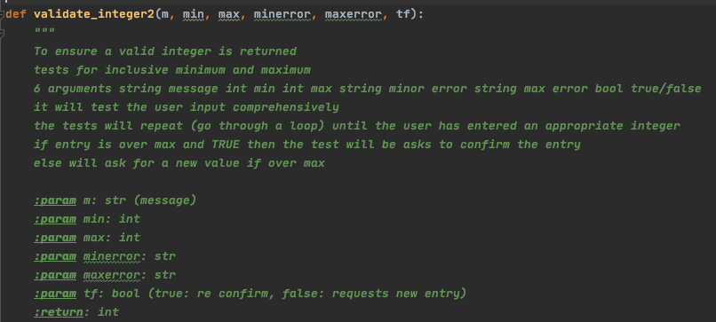
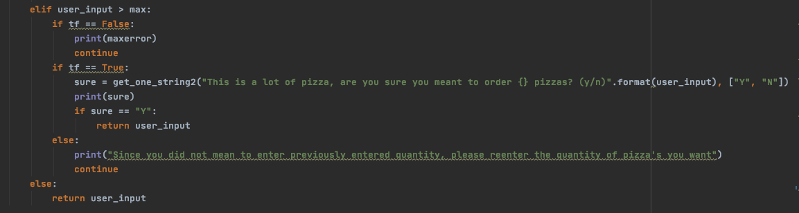

Aim:
In this sprint I want to fix some of the major problems that occured in sprint 2. Therefore the aim for sprint 3, is create functions to validate integer entrys so the program won't crash when the user is asked to input an integer.
I need to make a function which properly validates the entry of integers, an example of this is the user entering index numbers to select a type of pizza from the list, or entering the quantity of pizza's wanted. An index number out of range will cause a program crash and if the customer wants to order more than 30 pizzas of 1 type of pizza, the entry should request a confirmation that this is what they want to do.
Planning
The validate integer function asks user to confirm the number of pizza's if it's more than a certain number. elif number is more than max print("Are you sure you want {} pizzas") choice = ("Press enter to continue or any other key to change order") return number - This ensures user hasn't made any mistakes and if they have they have a second chance at changing it
Sprint Board
Reflection:
Iterative deicsion for integer validation
The purpose of this function is to make sure that every entry of an integer is properly validated and will not be the source of any programming crashes.
Option 1:
The first option that I will be evaluating will be to have one single integer function, to validate all siutations where a integer needs to be entered.

Option 2:
The second option that I will be evaulating will be to have two different integer functions, one to validate the situation where the user needs to enter an index number to signify what pizza flavour the user wants the order. The second integer function would be to valiate the entering of the quantity of the pizza's wanted. The main point of difference to option 2 to option 1 is that the user is asked to confirm the quantity of pizzas, if it is over a quantity that the pizza shop deems as unusally large. To implement this extra flexibility into the program, I had to spilt the orignial single integer function into two different ones. This was important as the user only needs to be asked to confirm their entry (if the problem believes it could be a mistake if it's too large) when being asked for a quanity of pizza; as it's the user's choice to decide the number of pizza's they want to order and they shouldn't be limited if the user is willing to pay for it. Whereas it is unnecessary for the user to be asked to confirm their entry if the program is asking for an index number; this is because a too large index number doesn't conincides with a pizza and shouldn't be accepted by the system at all.


Option 3:
Option 3 validates all integer entrys in one function, just like option 1. However similar to option 2, it allows the user to confrim the quantity of pizzas, if it is over a quantity that the pizza shop deems as unusally large. This feature of allowing the user to order any quantity of pizza, as long as they confirm it, this feature is important and I the best option will have to include this. It is crucial to realise that the program will only ask to confirm the entry, if over a predecided max, if a quantity is being ask, NOT if a index number is asked. This is because the max limit for a index number is a hard limit as it's not possible for there to be a greater index number. However, for quanity it's possible for the customer to order a quantity greater than the max, but only if they confirm it wasn't a mistake. To do this in one function, I had to add another parametre, so I can put true or false depending on whether I want the customer to be asked to confirm depending on what entry is asked.
 
Final Output: (screenshot)

Evaulation:
Option 1, which has one function to validate all entrys of integers. Option 1 is efficent as it get the same thing done, than option 2, with less code. When the program has to go run through less code, the program will run better. Option 1 is also better than option 2 in terms of future proofing. This is because if one thing is changed, e.g. a technality inside the pizza shop, the code will need to be changed in fewer places (only in 1 function in option 1, than compared with option 2, where the changes would have to be implemented in 2 integer functions.) Although option 1 has upsides in term of efficiency and future proofing, but overall it is not as good compared to option 2 and option 3. The benefits of option 2 and 3 outweigh the slight negatives of being sligtly less efficient and slightly more confusing.
Option 2 is not as efficient as option 2 or 3 as it uses two different functions to validate the integer entrys. Also if I wanted to change a error message in the future, i would have to change it in multiple places. Although the benefits of the user being able to confirm their pizza quantity (if the program thinks it's unusually large), outweighs these slight downsides.
Option 3 does the same thing as option 2 in a more efficient way. As it get the same thing done, than option 2, with less code. When the program has to go run through less code, the program will run better. It is also better for future proofing because certain things like error messages only need to get changed in one place instead of multiple places. However a big downside of this function is that it is very complex and hard to understand. Therefore, if I had to change something to do with this function in the future it would take a long to procress what to change, even with comments.
I am deciding between option 2 and 3, as the feature of being able to confirm the pizza's is crucial to my program. I have chosen option 2, as even though it ca be seen as less efficient than option 3, it is easier to understand to any coder and would therfore be more efficient in the long term.
Problems to fix:
I still have some problems from last sprint